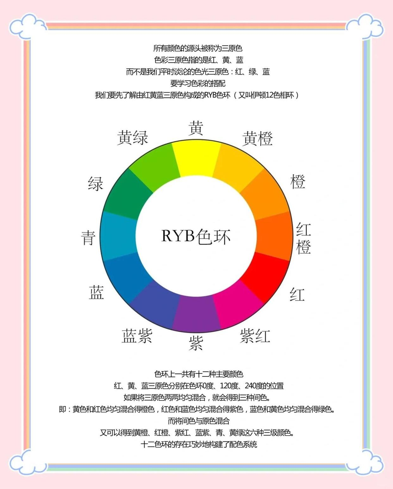
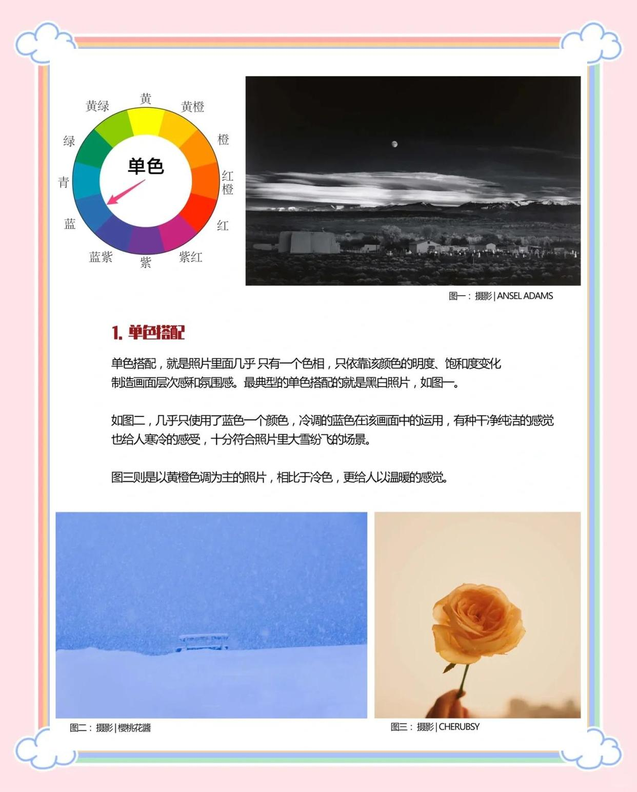
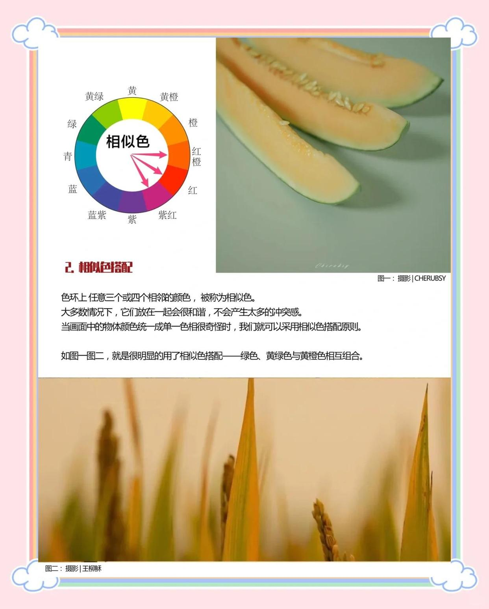
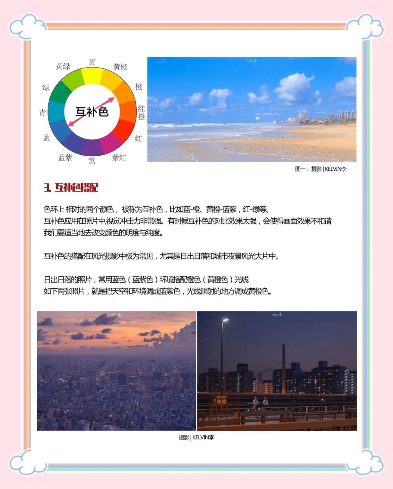
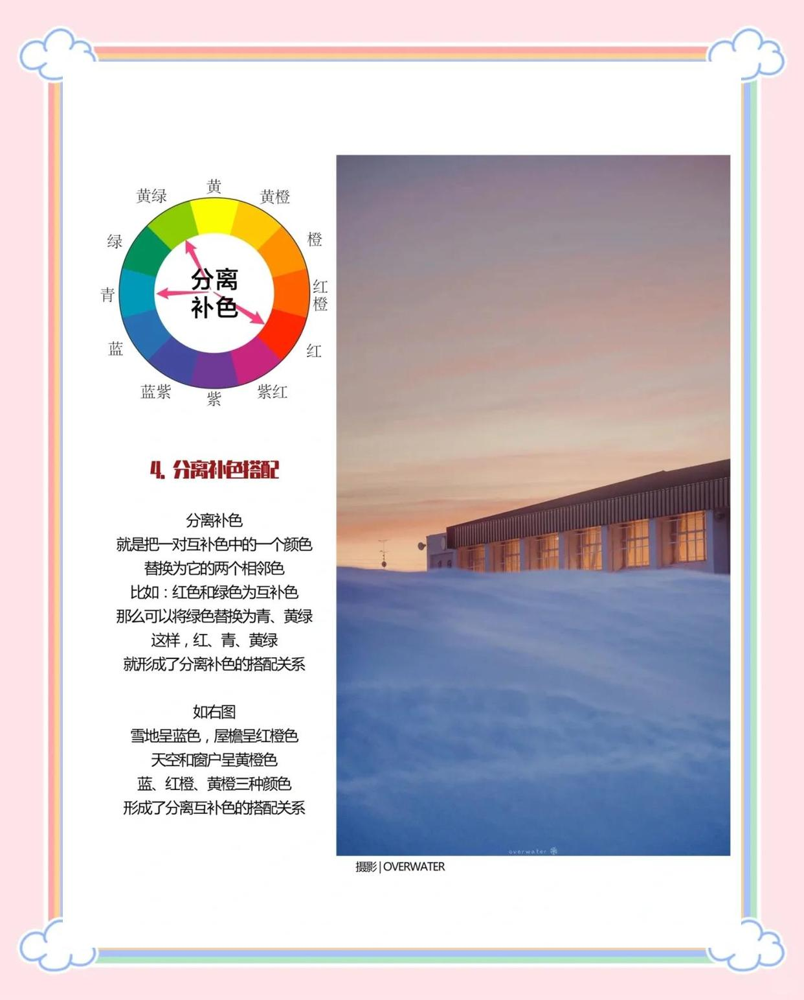
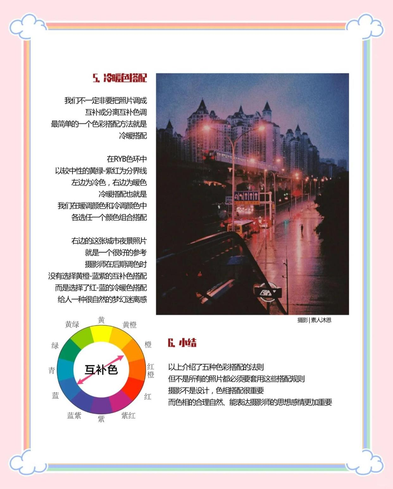

色彩搭配五大法则






摄影后期调色必备：色彩搭配五大法则
🌟色彩搭配不仅在美术和时尚中重要，在摄影后期调色中同样关键。美术中的色彩规律与摄影调色有很多相似之处。
要学习色彩搭配，首先要了解由红黄蓝三原色构成的RYB色环，也称为伊顿12色相环。（见图一）
🌈十二色环构建了配色系统：
✨1. 单色搭配（图二）
照片中几乎只有一个色相，依靠该颜色的明度、饱和度变化制造画面层次感和氛围感。
✨2. 相似色搭配（图三）
色环上任意三个或四个相邻的色相称为相似色。大多数情况下，它们放在一起会很和谐，不会产生太多冲突。当画面中的物体颜色统一成单一色相显得奇怪时，可以采用相似色搭配原则。
✨3. 互补色搭配（图四）
色环上相对的两个色相称为互补色，如蓝-橙、黄橙-蓝紫、红-绿等。互补色应用在照片中，视觉冲击力非常强。
✨4. 分离补色搭配（图五）
将一对互补色中的一个颜色，替换为它的两个相邻色。例如：红色和绿色为互补色，可以将绿色替换为青、黄绿。这样，红、青、黄绿就形成了分离补色的搭配关系。在无法将画面统一成完美的互补色时，可以考虑这种搭配。
✨5. 冷暖色搭配（图六）
冷暖色搭配是比较简单的色彩搭配方法。在RYB色环中，以较中性的黄绿-紫红为分界线，左边为冷色，右边为暖色。冷暖搭配也就是在暖调颜色和冷调颜色中各选一个搭配。
🌈小结：以上介绍了五种色彩搭配的法则，但不是所有的照片都必须要套用这些搭配规则。摄影不是设计，色相搭配很重要，但色相的合理自然、能表达摄影师的思想感情更加重要。